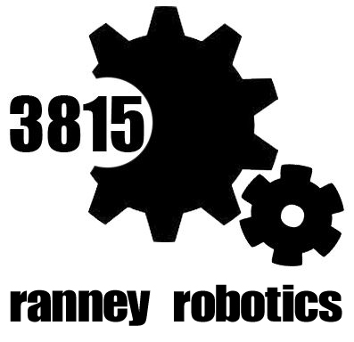

The Ranney Robotics Club is an award-winning middle and high school VEX Robotics Club. We have many
teams that compete in state and national competitions. Our club advisor is Chiara Shah, computer science
and robotics teacher. Our club is designed to foster innovation and teamwork in the VEX and VEX IQ competitions.
We have attended both the VEX US Open and VEX Worlds. Our club have been very succesful and have grown rapidly in the past 3 years.
We are sponsored by Moser-Taboada Inc.
The 3815A Team is made up of veteran robotics members Raymond Moser (Senior), Amy Winkler (Senior),
Chris Glenn (Freshman), Sammy Chiarello (Senior), Kylie Medlin (Senior), and Avani Bhatnagar
(Senior). Raymond, Amy, and Chris led the building of the robot with help from Sammy, Kylie,
and Avani. Amy and Raymond worked on the programming. The robot can perform all of the tasks of
the skyrise challenge, including lifting and scoring cubes and lifting and scoring skyrise sections
. Our primary strategy is to build a skyrise and score cubes on it as quickly as possible.
Our main goals for the season are to have an autonomous that scores many points, to continue
tweaking our design to make it score skyrise sections as efficiently as possible, and to work
together as a team to build the best robot possible.
3815D Project Daedalus has been competing for two seasons, this being our second year. 3815D did pretty well last year winning the Amaze Award and
a Tournament Championship Award, moving on to the NJ State Championships.
Our members include Vasilios Nicholas, who is the team leader and secondary designer, Jack Fink, who is also a designer, Andrew Denton who is
our programmer, and Jacob Guss, who is the builder. Our robot this year stacks both cubes and builds skyrises all while using
a light and minimalistic design to increase speed and maneuverability while reducing stress on the motors and risk of complicated lifts or intakes breaking.
Adam Mohamed (Programmer, Designer, Driver, and Builder) and - I am 15 years old, and I was born in Toronto, Ontario, on June 23rd, 1999.
I have lived in many places including Canada, Michigan, Ohio, Connecticut, and New Jersey. I came to Ranney in eighth grade and I am now
a freshman. I have also enjoyed activities like playing tennis, video games, and building things. The latter two are what led me to robotics.
The building side of things obviously applies to robots, as you need to build the robot. I was also interested in robotics because of the
programming, because I was curious about it from my gaming background. Later in life, I hope to find a career in either robotic or mechanical
engineering. This year I started in robotics, and enjoyed very much the programming and physical aspects. I hope next year to improve my skills
on both.
Dylan Biswal (Programmer, designer, and builder)- I am 15 years old and I was born in New Brunswick, New Jersey. I came to ranney in 6th grade
and have been involved in science, building, and computer activities ever since. I am now a sophomore in Ranney School’s high school. In 8th
grade I took the challenge of building a rube-goldberg machine for my science olympiad competition. I spent many hours on this and I ended
up getting 3rd place in the competition. This spiked my interest in building and got me to join Robotics as a freshman. During my
freshman year my team made a robot that successfully got us into the championships. This year, me and my partner are excited to
make a new robot and make it to worlds.
Michael DePalma (Designer, Builder, Advertiser)- I am 15 years old and I was born in Staten Island, New York. I came to Ranney in 6th grade
and am a now sophomore. In 7th and 8th grade I was apart of the middle school science olympiad team. On my time on the team I had to design
a helicopter made out of balsa wood to remain in the air for the longest amount of time. I also designed a helicopter that had to safely
keep an egg in the air for as long as possible without having the egg break. This year I replaced Kevin Xia on this team and am the
newest member of the team. I hope to improve my skills with designing and programming.
Jillian Ross - programmer and engineer. She writes the autonomous and driver mode code, as well as works on the design of the robot.
Nicholas Ross - the team's primary driver. Nicholas is also an assistant builder.
Aidan Denver-Moore - the team’s builder and secondary driver. She works on the design of the robot.
Jared Rush - the team’s notebook keeper who maintains the teams records as well as interacts with opposing schools at competitions.
Our robot: This year, Xbots 360 decided to build a stable, 6 foot scissor
lift with a dual intake design. The robot can passively stack skyrise intakes and
score two cubes at a time.
Ranney students, Dana Schioppo (‘17), William Zheng(‘17), and Michael Zheng (‘18), are proud members of
Ranney Robotics’ Incursio team. Dana Schioppo, a previous member of Ranney Robotics team serves as Incursio’s
Head of Team and Main Engineer. William Zheng assumed the position of team Head of Social Outreach and Main Programmer, at the conclusion
of the 2014 school year. Upcoming Freshman, Michael Zheng later entered team Incursio in September of 2014, as Head Driver and Main Secretary. Team
Incursio has constructed a speed tank drive base, equipped with a ten- bar lift and conveyor belt to serve as both a cube and cone intake. The robot is presently four and a half feet tall with the lift fully extended.
In the 2014- 2015 season, team Incursio has acquired a position in the New Jersey Vex
Robotics State level competition, and continues to strive for various awards including the Excellence Award as well as the Design Award.
Rylan Foy and Ryan Lubin are proud to be team R². They are both freshen and new to robotics. Their robot has a U-base, 10-bar lift,
and side-roller intake. The lift is currently over
five feet tall! They hope to have a strong first year and possibly reach the state-level competition.
=======
Hello world
>>>>>>> FETCH_HEAD